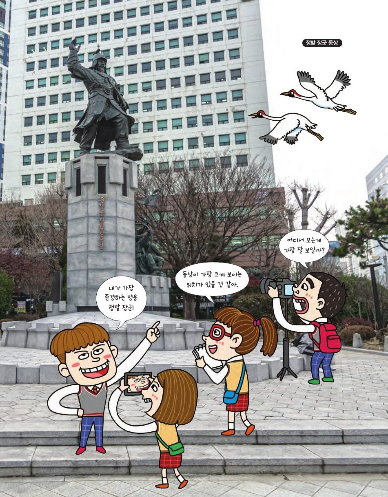

초량 삼거리의 정발 장군 동상. 어디에서 봐야 가장 크게 보일까요? 원과 접선·할선의 성질로 '가장 잘 보이는 자리'를 찾아봐요.
★ 이 단원에서는 — 원, 접선, 할선에 대해 이해하고 여러 가지 문제를 해결할 수 있다.

📍 정발 장군 동상원 밖의 점 P에서 그은 접선의 접점 C, 할선이 원과 만나는 점 A, B. 그러면 PC² = PA × PB. P와 할선의 방향(빨간 점)을 드래그하며 확인해 보세요.
∠P는 공통, 그리고 접선과 현이 이루는 각 ∠PCA = ∠CBA(원주각) → 두 각이 같으니 AA 닮음. PA : PC = PC : PB → PC² = PA × PB.
골대 양 끝 A, B와 슈팅 지점 P가 이루는 각 ∠APB가 슈팅각. 클수록 골이 될 확률이 높아요. 공(P)을 드래그해 보세요. 같은 슈팅각이 되는 점들이 어떤 도형을 이루는지 보세요.
중앙 정면에서 x = 3.5 / tan 30° ≈ 6.06 m. 같은 슈팅각인 점들은 A, B를 지나는 원 위에 있어요(원주각). 작은 원일수록 각이 커요 → ∠AQB > ∠APB.
골대 끝 A에서 16 m 떨어진 지점에서 골라인과 수직으로 달려오며 슈팅! 어디서 차야 슈팅각이 최대일까요? 선수(초록)를 드래그하거나 '달리기'를 눌러 보세요.
최대인 지점 P는 A, B를 지나면서 달리는 직선에 접하는 원의 접점. 할선 정리로 x² = 16 × (16+7) → x = √368 ≈ 19.2 m.
눈높이보다 h만큼 높은 곳에 길이 d인 동상이 서 있어요. ∠APB가 최대가 되는 자리는 A, B를 지나고 시선(수평선)에 접하는 원의 접점. 관찰자를 드래그해 보세요.
x² = h(h + d) → x = √(h(h+d)). h = 5 − 1.5 = 3.5, d = 4.5 → x = √(3.5 × 8) = √28 ≈ 5.29 m. 교실 칠판도 클리노미터 앱으로 높이를 재서 최적 자리를 찾아보세요. 영화관 경사 좌석도 같은 원리!